O passo a passo prático para colocar o sistema em uso no dia a dia, com as telas reais, exemplos operacionais e resolução rápida do que fazer em cada situação.
Sobre este manual e telas reais
As telas e fluxos documentados mostram o sistema real em funcionamento com uma empresa modelo, exemplificando o atendimento ao vivo, roteamento de agentes, gestão de funis e automações.
Primeiro acesso
Você recebeu o endereço, o e-mail e a senha. Este é o passo a passo da configuração inicial da sua empresa, tela por tela.
Primeiro acesso: os 6 passos
Admin
Abra o endereço que você recebeu e entre com o e-mail e a senha de acesso. A configuração abaixo leva uns 10 minutos.
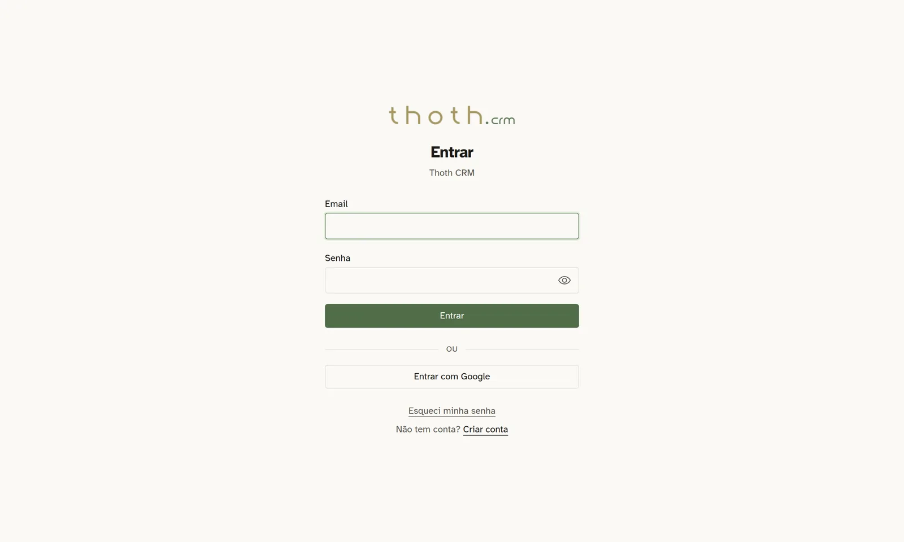
Tela de entrada.
Se aparecer isto
"Email ou senha incorretos."
Por que acontece: Algum dos dois está errado.
O que fazer: Confira maiúsculas e espaços. Use "Esqueci minha senha".
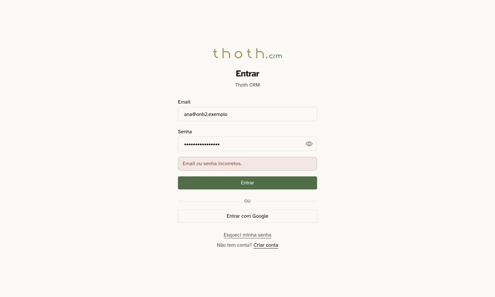
O aviso de senha errada.
Passo 1 · Seu negócio
Nome, o que a empresa faz (uma linha basta) e onde atende (define o fuso e o horário). Aceite os termos para continuar.
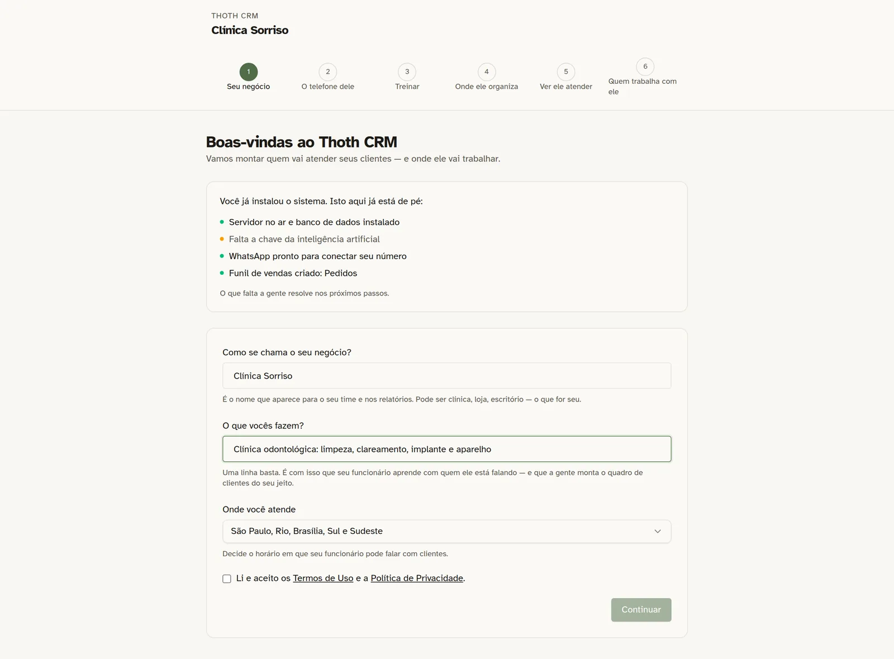
Passo 1.
Passo 2 · O telefone dele
Escolha como o número é conectado: WhatsApp no celular (QR), conta oficial da Meta ou provedor parceiro. Dá para pular e conectar depois.
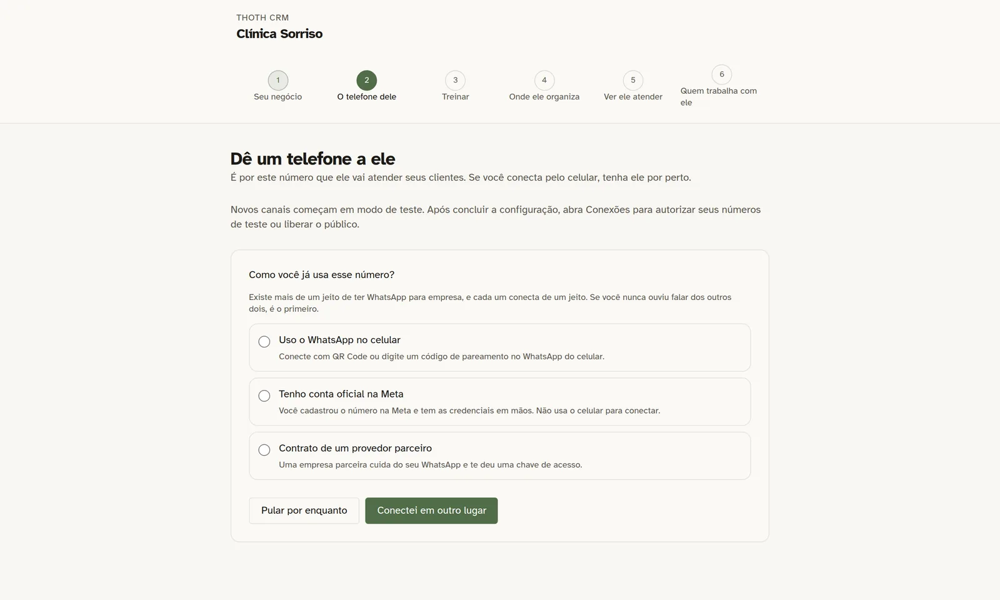
Passo 2.
Passo 3 · Treinar
Cole a chave de IA, dê um nome ao funcionário, escolha o jeito de falar (Próximo e caloroso, Objetivo e cordial ou Curto e prático) e escreva as regras da casa. Nada disso é definitivo.
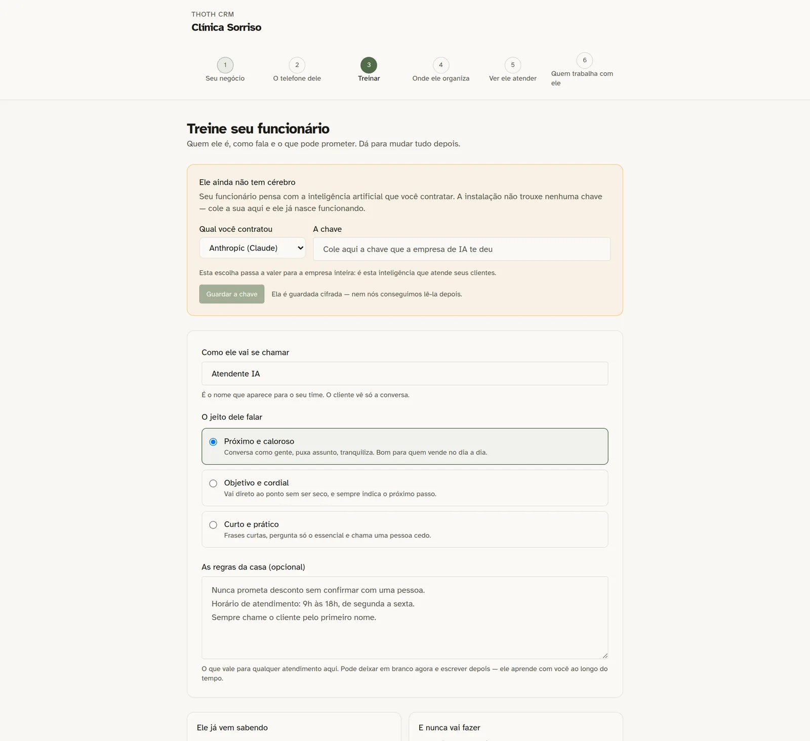
Passo 3.
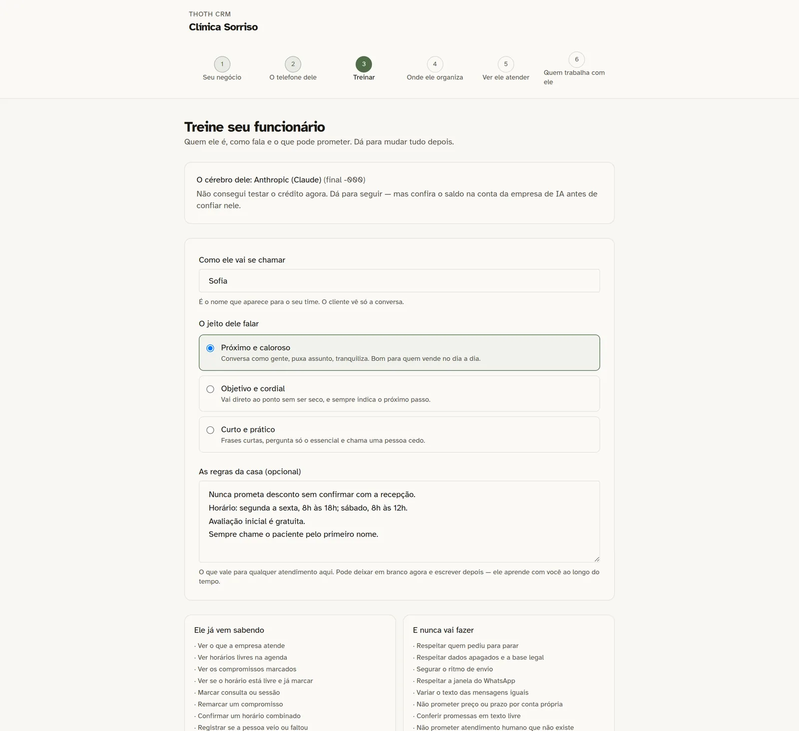
Sem chave confirmada o agente é criado como rascunho, com o aviso em amarelo.
Passo 4 · Onde ele organiza
O quadro do funil, com as colunas sugeridas.
Passo 5 · Ver ele atender
Um ensaio de conversa. Com o agente em rascunho, aparece "Rascunho não responde mensagem, então não há o que ensaiar" e você pode continuar.
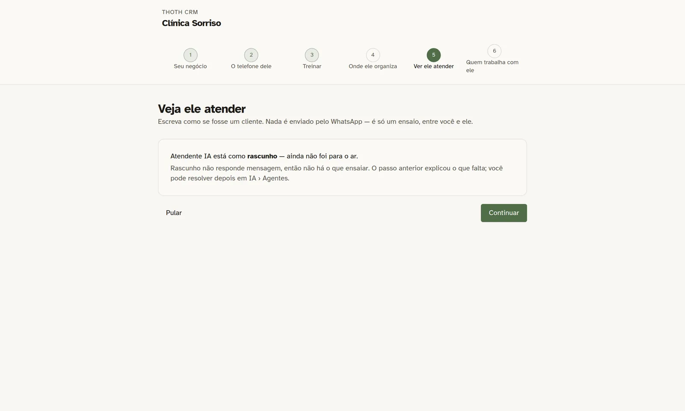
Passo 5 com o agente em rascunho.
Passo 6 · Quem trabalha com ele
Convide a equipe (veja o capítulo de Equipe na trilha do gestor).
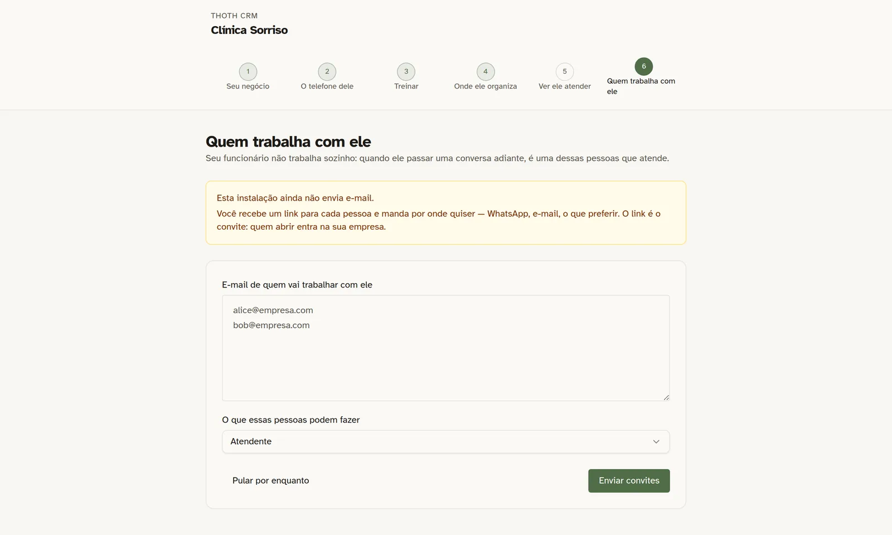
Passo 6.
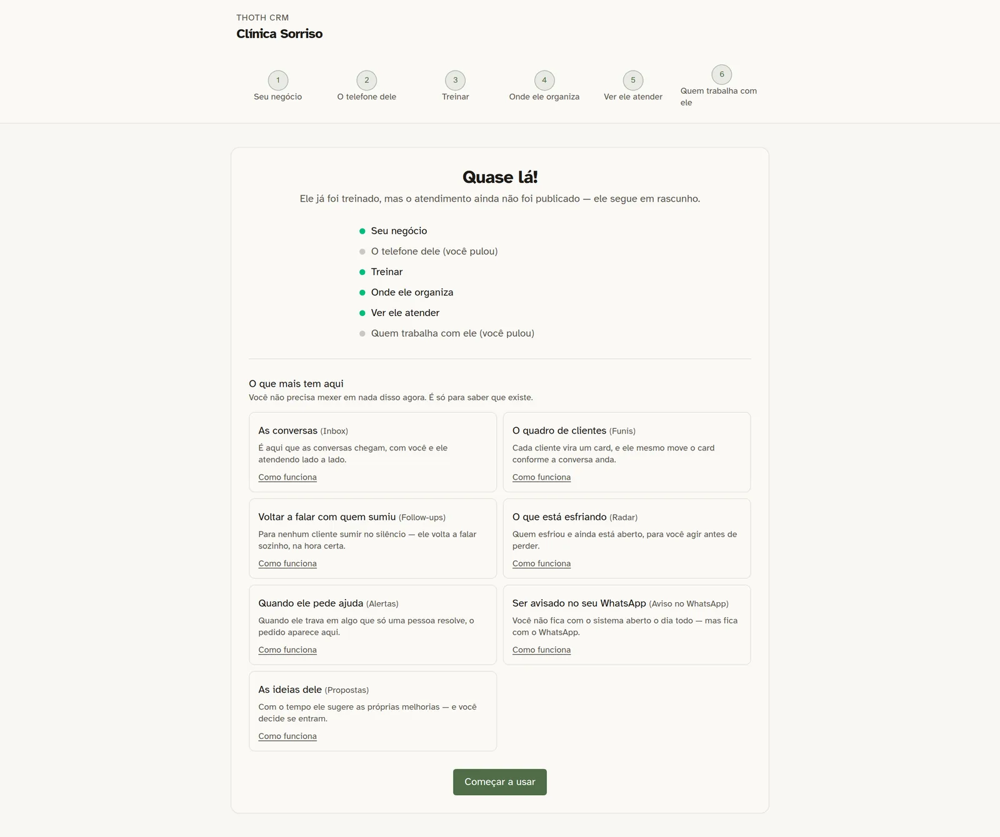
A tela final resume o que ficou pronto e o que foi pulado.
Depois do primeiro acesso: a ordem certa
Admin
Depois do primeiro acesso, siga a ordem da trilha do gestor: conexão, chave, funil, conhecimento, agente, teste, publicação, follow-ups e roteador.
Trilha do atendente
Para quem conversa com os clientes todo dia. Cada capítulo é uma situação real: o que fazer, com a imagem da tela, um exemplo e o que fazer se algo der errado.
Começar o dia: o que você vê na tela
Todos
Onde: Atendimento › Inbox
A caixa de conversas (Inbox). Nomes e conversas deste manual são inventados.
O menu fica à esquerda, em grupos: Atendimento (Inbox, Radar, Agenda, Respostas rápidas), CRM (Funis, Contatos, Tarefas), Agente de IA, Canais, Análise e, no rodapé, Configurações. Você só vê as telas que o seu papel permite.
Na Inbox, as abas no alto separam as conversas. O número ao lado de cada aba é a quantidade:
Aba
O que mostra
Fila
Clientes esperando alguém da equipe. Cada um mostra "Aguardando há…" e a posição (1º, 2º…).
Minhas
As conversas que estão com você.
Todas
Todas as conversas abertas.
Fechadas, Arquivadas
Conversas encerradas ou guardadas.
O campo Busca procura por nome, telefone ou texto da última mensagem. Também dá para filtrar por Não lidos, Grupos, por tag e por número de WhatsApp.
Dica. Para achar qualquer tela do sistema, aperte Ctrl + K (no Mac, ⌘ + K) e digite o nome, por exemplo "agenda".
Quando a IA está atendendo o cliente
Atendente+
Onde: Atendimento › Inbox
Conversa em que a IA (a Sofia) responde sozinha. No alto aparece "Sem responsável" e o botão Assumir.
Quando a IA está no comando, você não precisa fazer nada. Abra a conversa só para acompanhar. As mensagens dela aparecem em verde, com a marca IA.
Vale assumir a conversa quando:
o cliente pedir para falar com uma pessoa;
o assunto for sensível (dor, reclamação, dinheiro);
a IA responder algo errado ou ficar repetindo a mesma resposta.
Atenção
O selo no topo da conversa diz quem manda: "Automático atendendo" ou o nome de uma pessoa. Leia o selo antes de escrever. Se você escrever enquanto a IA está no comando, as duas podem responder ao mesmo tempo.
A IA passou a conversa para você
Atendente+
Onde: Agente de IA › Casos e Atendimento › Inbox
A IA passa a conversa quando o cliente pede uma pessoa ou quando ela esbarra em algo que só um humano resolve. Você é avisado em três lugares ao mesmo tempo: o número vermelho em Casos, o sininho no alto e um alerta na Central de avisos.
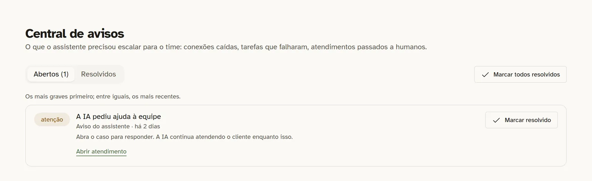
Central de avisos: "Handoff humano solicitado — assumir a conversa". Use Abrir conversa.
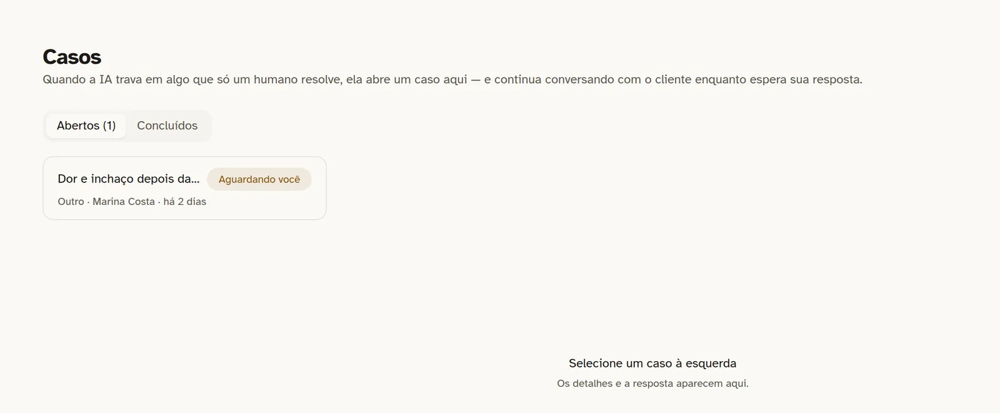
Casos: a IA abre um caso quando trava e continua conversando com o cliente enquanto espera você.
Ao abrir a conversa, o primeiro cartão explica tudo:
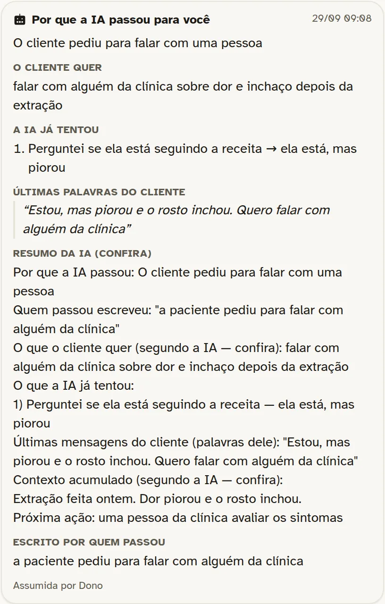
O cartão "Por que a IA passou para você": o que o cliente quer, o que a IA já tentou e as últimas palavras dele.
Leia o cartão de cima a baixo. O resumo da IA pode errar, então confira as últimas palavras do cliente.
Veja se o cartão diz que o cliente já foi avisado de que uma pessoa vai assumir. Se disser que não foi avisado, ele está esperando sem saber: comece pedindo desculpa pela espera.
Clique em Assumir (ou Assumir e responder no cartão).
Responda. Quando terminar, feche a conversa ou devolva ao automático (veja o capítulo seguinte).
ExemploMarina escreveu: "Fiz a extração ontem, piorou e o rosto inchou. Quero falar com alguém da clínica." A IA parou, abriu o caso "Dor e inchaço depois da extração" e passou para a equipe. O cartão mostrava: O cliente quer falar com alguém da clínica sobre dor e inchaço; A IA já tentou: perguntou se ela segue a receita.
Assumir, responder e deixar uma anotação
Atendente+
Onde: Atendimento › Inbox
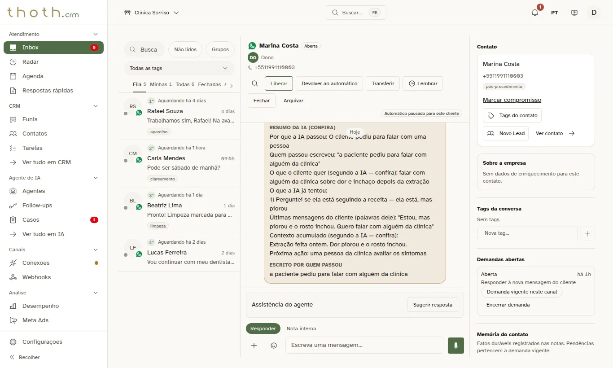
Depois de Assumir: aparece o seu nome como responsável e o aviso "Automático pausado para este cliente".
Clique em Assumir. O nome de quem assumiu aparece no alto, e a IA para de responder esse cliente.
Clique na caixa Escreva uma mensagem… e digite.
Enter envia. Shift + Enter pula de linha.
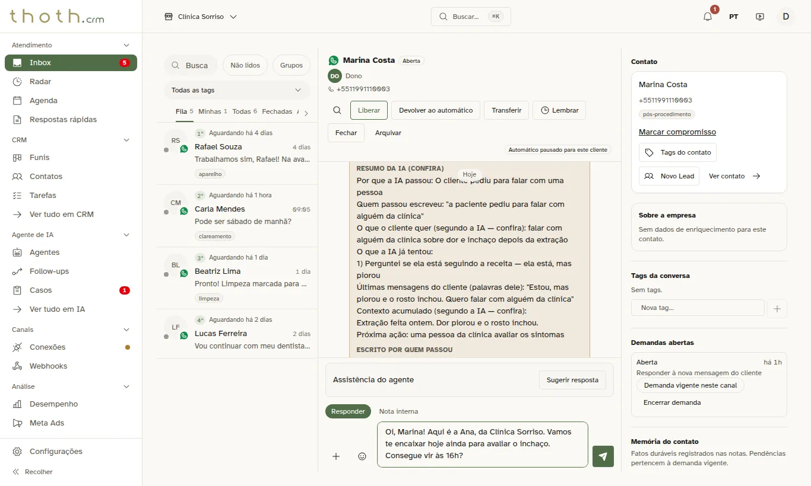
Escrevendo a resposta ao cliente.
Para deixar um recado que só a equipe vê, troque de Responder para Nota interna. A nota fica num cartão amarelo, escrito "só o time vê", e o cliente nunca recebe.
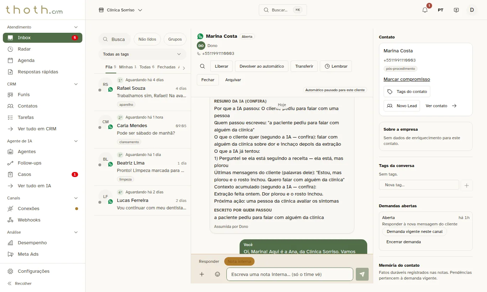
A mensagem enviada (verde) e a nota interna (amarela) na mesma conversa.
Exemplo de notaNota interna: "Paciente com inchaço 24h após extração do 38. Avaliar hoje às 16h com a Dra. Paula."
Se aparecer isto
A mensagem fica com o relógio ou "na fila" e não chega ao cliente.
Por que acontece: O WhatsApp da clínica está desconectado. Nos testes, a mensagem ficou na fila quando o número não estava realmente conectado.
O que fazer: Vá em Canais › Conexões e veja se o número aparece como conectado. Se não aparecer, use Reconectar. Não reenvie várias vezes: quando o número voltar, o que está na fila sai.
Devolver ao automático, transferir, lembrar e fechar
Atendente+
Onde: Atendimento › Inbox
Depois de assumir, a barra do alto mostra estes botões:
Botão
O que faz
Devolver ao automático
A IA volta a atender esse cliente. Use quando o assunto delicado acabou.
Pausar o automático
A IA para nesta conversa, mas ninguém "vira dono". (Aparece quando a IA está no comando.)
Transferir
Passa a conversa para outra pessoa da equipe. A troca é imediata e fica no histórico.
Lembrar
Esconde a conversa e ela volta sozinha à lista em 1, 3 ou 24 horas.
Fechar
Encerra o atendimento. Se o cliente escrever de novo, a conversa reabre.
Arquivar
Guarda a conversa fora da lista.
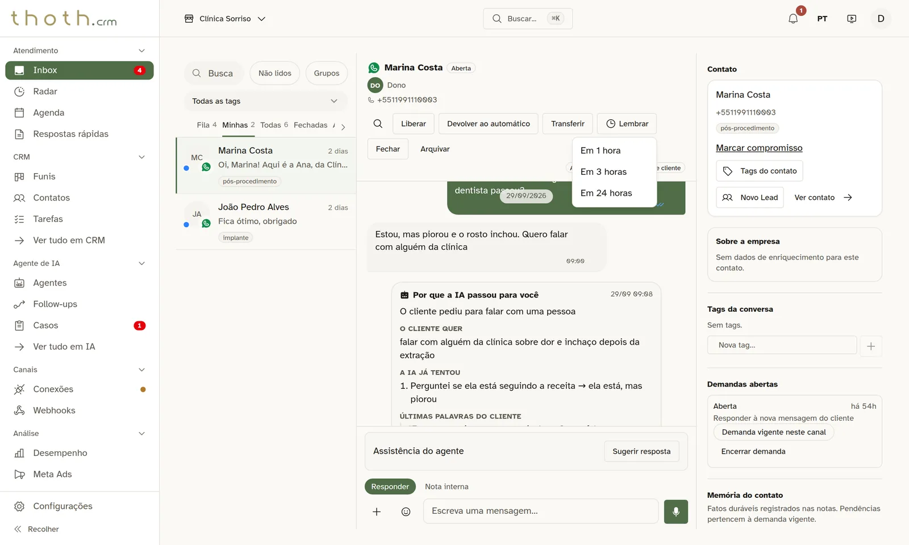
Lembrar: escolha em quanto tempo a conversa deve voltar.
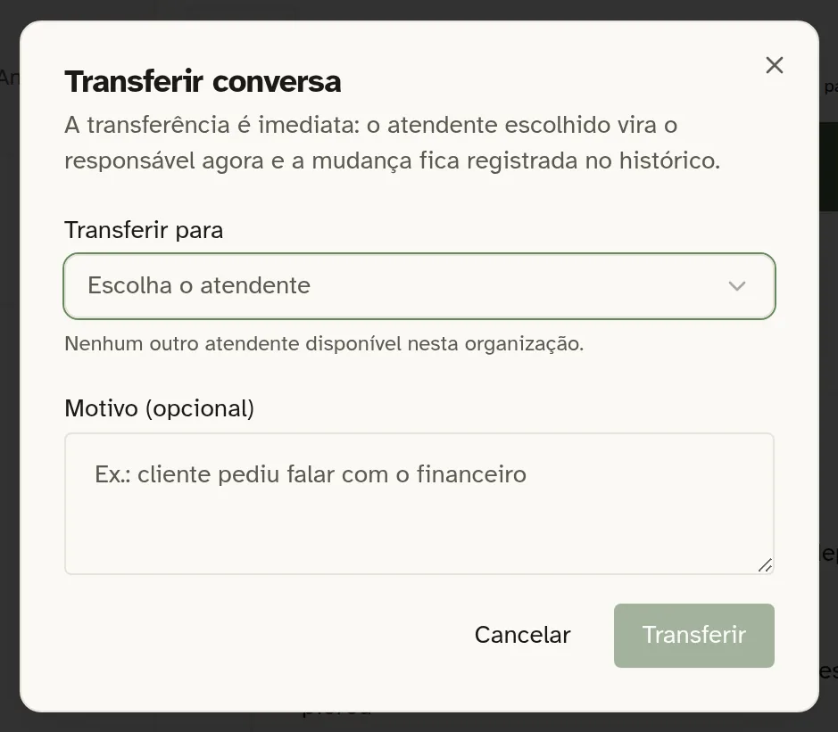
Transferir: escolha a pessoa e, se quiser, escreva o motivo.
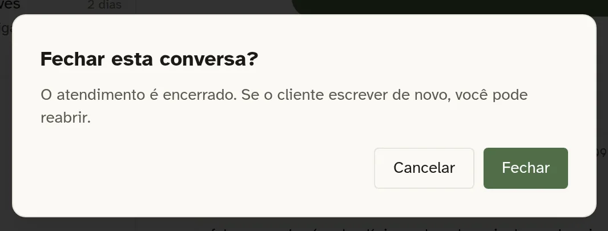
Fechar pede uma confirmação.
Se aparecer isto
Transferir conversa: "Nenhum outro atendente disponível nesta organização."
Por que acontece: Só existe uma pessoa cadastrada na equipe, ou as outras estão indisponíveis.
O que fazer: Convide mais pessoas em Configurações › Equipe (veja a trilha do gestor).
Atenção
Feche ou devolva ao automático quando terminar. Se você assumir e esquecer, o cliente fica sem a IA e sem você.
Marcar um horário para o cliente
Atendente+
Onde: Atendimento › Agenda
A Agenda mostra o que está marcado, com quem e quem atende, seu e da equipe. Para marcar:
A Agenda em visão de semana. Compromissos aparecem como blocos coloridos.
Clique em Novo agendamento.
Em Quem será atendido, digite o nome e escolha o cliente da lista.
Escolha o tipo: Atendimento, Consulta ou Reunião (cada um tem duração, aqui 30 minutos).
Se quiser, preencha e-mail do convidado, endereço e uma observação (a observação aparece na descrição do compromisso).
No calendário, clique no dia. Só aparecem os dias e horários livres.
Clique no horário e depois em Confirmar.
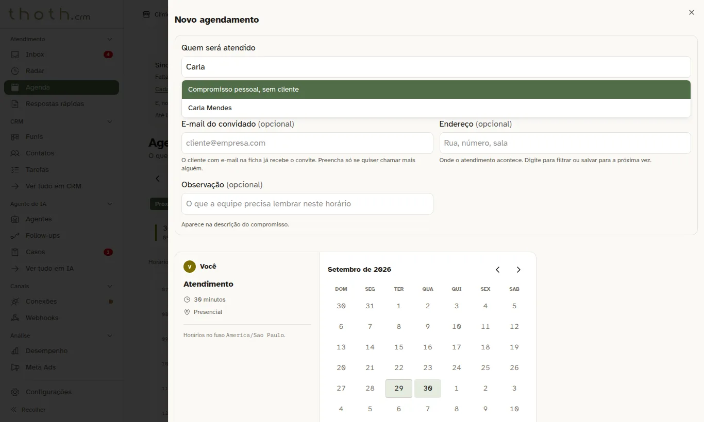
Digite o nome para achar o cliente.
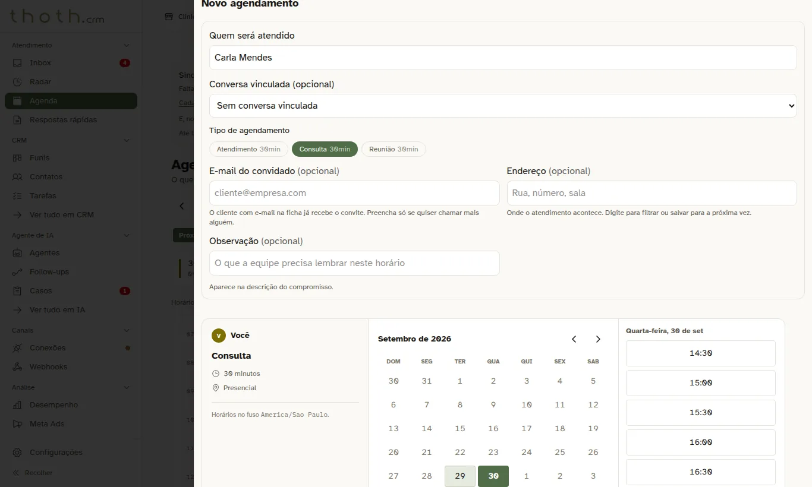
O dia escolhido mostra a lista de horários livres. Horários já ocupados não aparecem.
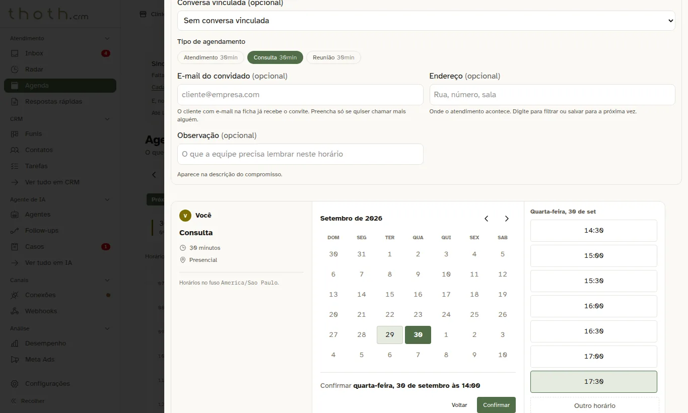
A confirmação repete o dia e a hora antes de gravar.
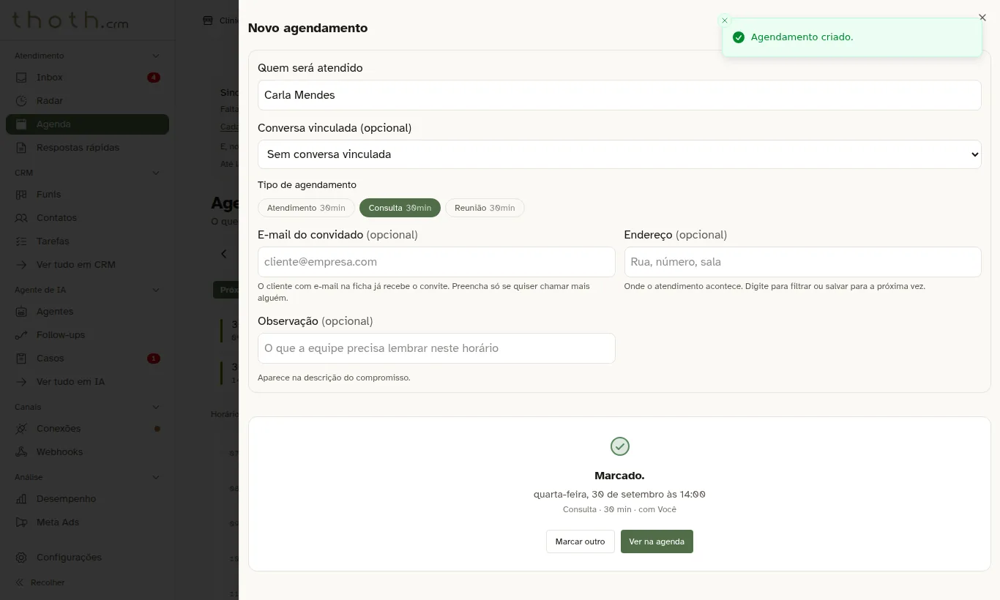
Pronto: "Marcado." e o aviso "Agendamento criado."
Se aparecer isto
No calendário: "Você ainda não publicou seus horários de atendimento. Sem eles ninguém escolhe horário — nem você, nem o agente." Nenhum dia fica disponível.
Por que acontece: A Agenda só oferece horários dentro da jornada que cada pessoa publica. Numa instalação nova ninguém publicou ainda.
O que fazer: Publique os horários em Configurações › Equipe › Atendimento (passo a passo no capítulo "Horários de atendimento", na trilha do gestor). Este é um dos passos que mais trava o primeiro uso.
Se aparecer isto
Faixa no alto da Agenda: "Sincronizar com o Google ainda não está disponível."
Por que acontece: O aplicativo do Google não foi cadastrado nesta instalação.
O que fazer: Tudo continua funcionando, só não troca compromissos com o Google. Peça ao suporte do THOTH para ativar a conexão com o Google.
Tarefas e Radar: nada fica esquecido
Todos
Onde: CRM › Tarefas e Atendimento › Radar
Tarefas é a lista do que ficou combinado, com prazo. O que venceu aparece em Atrasadas.
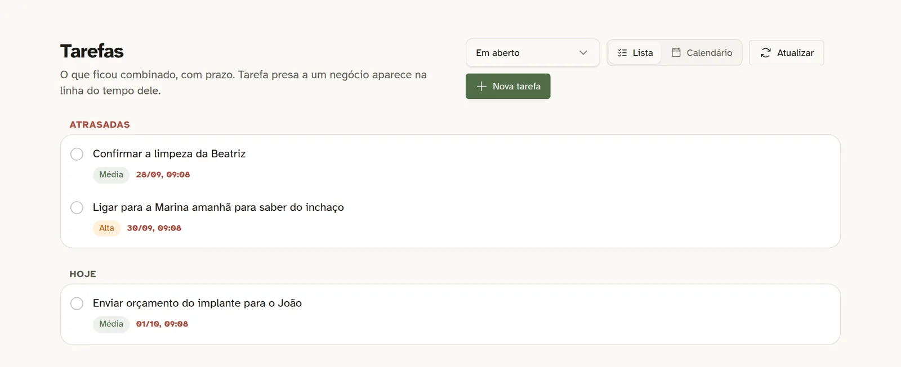
Tarefas: atrasadas em cima, as da semana embaixo.
Clique em Nova tarefa.
Escreva o que fazer. Exemplo: "Ligar para a Carla e confirmar o horário de sábado".
Defina prazo, horário, prioridade (Baixa, Média, Alta, Urgente) e situação.
Clique em Salvar. Quando terminar, marque a tarefa como concluída.
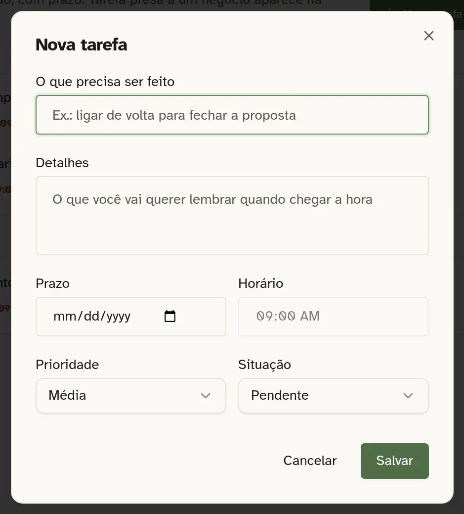
Formulário de nova tarefa.
Se aparecer isto
"Escreva um título para a tarefa."
Por que acontece: O primeiro campo é obrigatório.
O que fazer: Preencha o campo "O que precisa ser feito" e salve de novo.
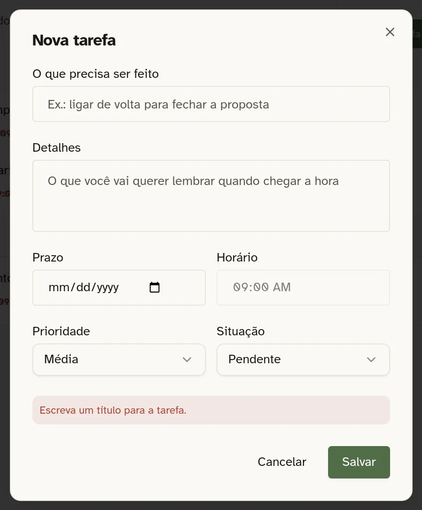
O aviso aparece em vermelho dentro do formulário.
Radar: quem está esfriando
O Radar mostra conversas abertas que pararam. Olhe pelo menos uma vez por dia.
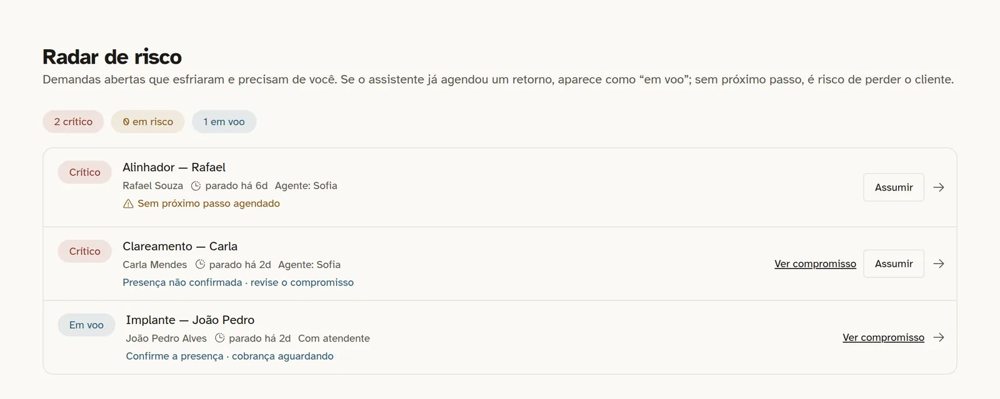
Radar de risco: um cliente "Crítico" e outro "Em voo".
Selo
O que quer dizer
O que fazer
Crítico
Parado há dias e sem próximo passo marcado.
Assuma ou mande uma mensagem hoje.
Em risco
Começando a esfriar.
Mande uma mensagem hoje.
Em voo
Já tem retorno ou compromisso marcado.
Só acompanhe.
Funis: acompanhar a venda
Todos
Onde: CRM › Funis
O quadro do funil "Agendamentos": cada coluna é uma etapa e cada cartão é um cliente.
Abra o funil pelo nome, na tela CRM › Funis.
Arraste o cartão para a coluna seguinte quando a venda avançar.
Para criar um cartão, clique em Novo Lead.
Dentro do cartão há o botão para abrir a conversa no Inbox.
No alto do quadro há filtros: busca por título, Responsável, Status, Tag e Apenas atrasados.
Dica. A IA também move cartões sozinha, se o gestor liberou. Se um cartão mudou de coluna e ninguém da equipe mexeu, foi ela.
Contatos: cadastrar, achar e (com cuidado) excluir
Atendente+
Onde: CRM › Contatos
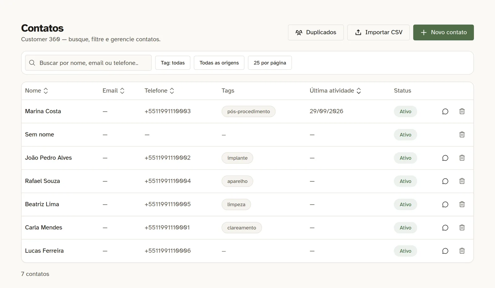
A lista de contatos, com busca, filtro por tag e importação de planilha.
Clique em Novo contato.
Preencha nome e pelo menos telefone (com +55 e DDD) ou e-mail.
CPF e tags são opcionais. Tags se separam por vírgula (exemplo: vip, recompra).
Clique em Criar contato.
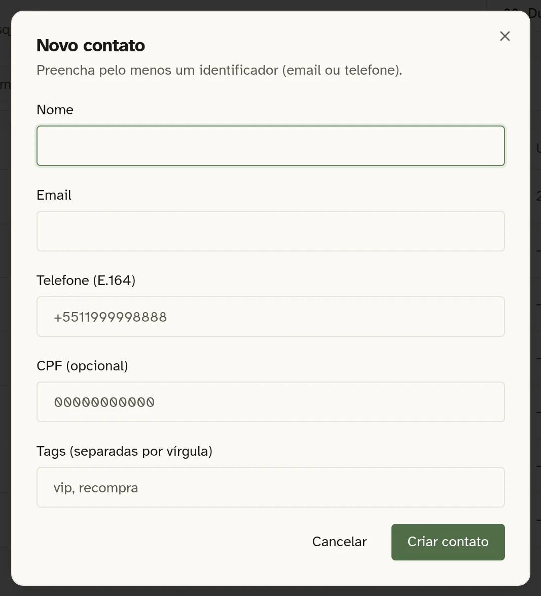
Formulário de novo contato.
Cuidado conhecido
Nos testes, clicar em "Criar contato" com tudo em branco criou um contato chamado "Sem nome", sem telefone e sem e-mail, e mostrou "Contato criado", apesar de a tela pedir pelo menos um identificador. Preencha sempre telefone ou e-mail. Se criar um vazio sem querer, exclua-o na lixeira da lista.
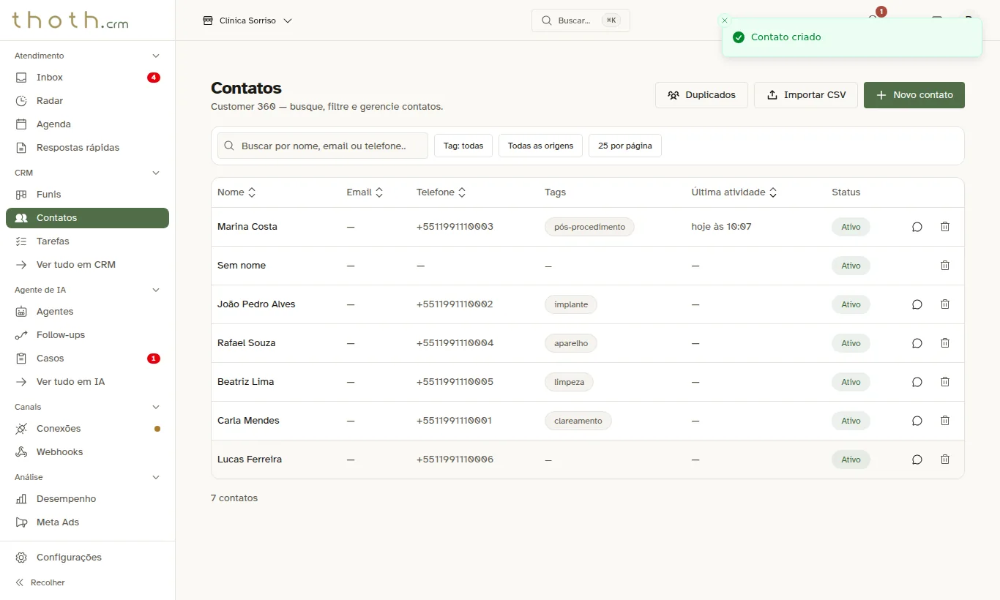
O contato vazio aparece na lista como "Sem nome".
Se aparecer isto
Ao excluir: "Não foi possível excluir: o contato ainda tem registros vinculados."
Por que acontece: O contato tem compromisso na Agenda. O sistema não apaga compromissos junto com o contato, de propósito. Nada foi apagado: as conversas continuam lá.
O que fazer: Abra a Agenda, cancele ou apague o compromisso desse contato e tente excluir de novo.
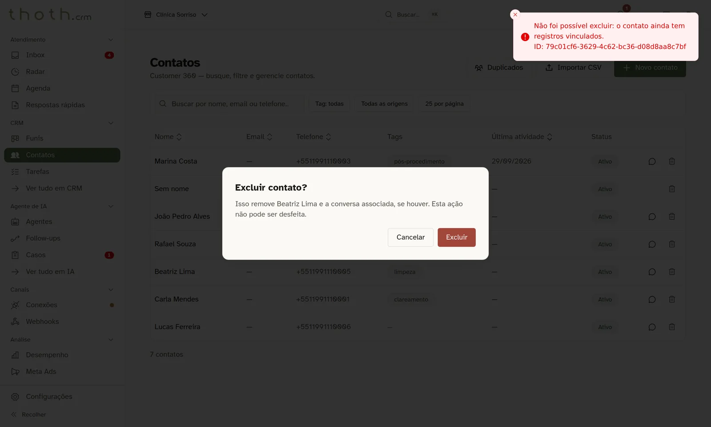
O aviso aparece no canto, por cima da janela de confirmação.
Respostas rápidas
Atendente+
Onde: Atendimento › Respostas rápidas
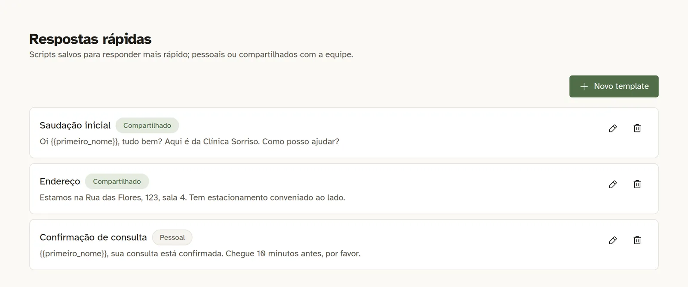
Modelos de resposta: "Compartilhado" vale para a equipe; "Pessoal" só para você.
Clique em Novo template.
Dê um título (exemplo: "Endereço") e escreva a mensagem.
Use {{primeiro_nome}} ou {{nome}}: o sistema troca pelo nome do cliente na hora de enviar.
Se quiser, crie um atalho curto e ligue Compartilhar com a equipe.
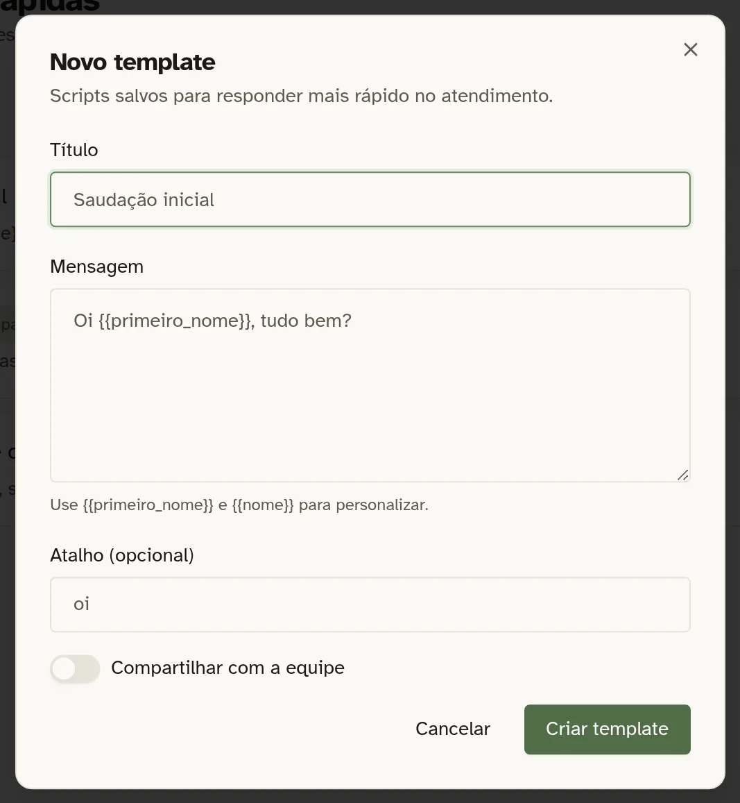
Formulário do novo modelo.
Mensagem de exemploOi {{primeiro_nome}}, tudo bem? Aqui é da Clínica Sorriso. Como posso ajudar?
Atalhos de teclado do Inbox
Atendente+
Onde: Atendimento › Inbox
Tecla
O que faz
j / k
Próxima conversa / conversa anterior
r
Vai para a caixa de resposta
a
Assumir a conversa
e
Fechar a conversa (pede confirmação)
?
Mostra todos os atalhos
Ctrl + K
Busca de telas em qualquer lugar
Trilha do gestor
Para gerentes e administradores. Tudo da trilha do atendente vale para você também. Aqui: ligar a IA na ordem certa, equipe, campanhas, prospecção, relatórios e configurações.
A ordem certa para ligar a IA
Gerente+
Onde: Agente de IA
Cada peça depende da anterior. Fazer fora de ordem é a causa número um de "a IA não responde".
1 Conexões→2 Chaves de IA→3 Funil→4 Conhecimento→5 Agente→6 Testar→7 Publicar→8 Liberar o público
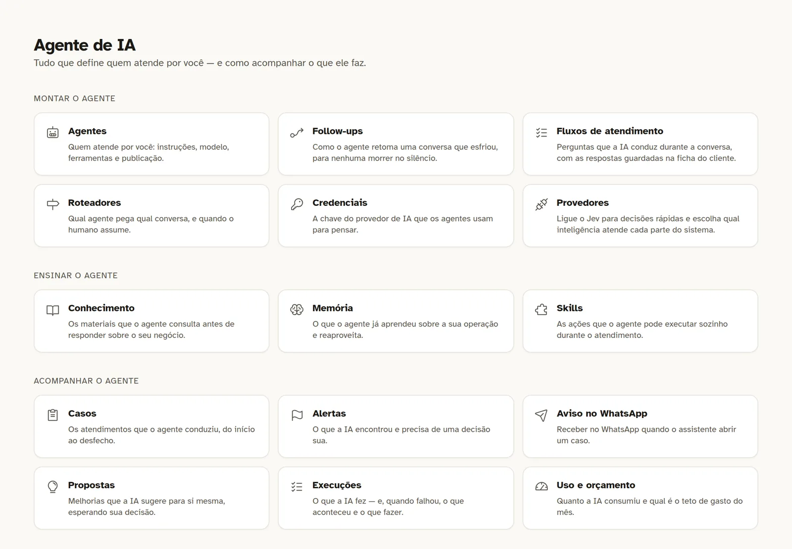
O painel "Agente de IA" reúne tudo: montar o agente, ensinar e acompanhar.
Os capítulos seguintes seguem essa ordem. Se a IA não responde, vá direto para o próximo capítulo.
A IA não responde. Por quê?
Gerente+
Onde: Canais › Conexões
Confira nesta ordem. Quase sempre é uma destas oito causas.
#
Confira
Onde
Sinal de problema
1
O número está conectado?
Canais › Conexões
Status diferente de conectado, ou "Conectando…".
2
A IA está liberada para esse número?
Canais › Conexões › Configurar acesso da IA
"IA em modo de teste — Nenhum número autorizado — a IA não responde ninguém nesse canal."
3
A chave de IA é válida?
Agente de IA › Credenciais
Cartão com selo vermelho "Inválida".
4
O agente está publicado?
Agente de IA › Agentes
Selo "Rascunho" no cartão do agente.
5
O agente está pausado?
Dentro do agente
Botão "Pausar automático" ligado, ou modo "assistido".
6
A conversa está com uma pessoa?
Inbox
Selo com o nome de alguém e "Automático pausado".
7
Estourou o limite de gasto?
Agente de IA › Uso e orçamento
Limite definido e atingido.
8
Deu erro na execução?
Agente de IA › Execuções
Linha vermelha com o motivo.
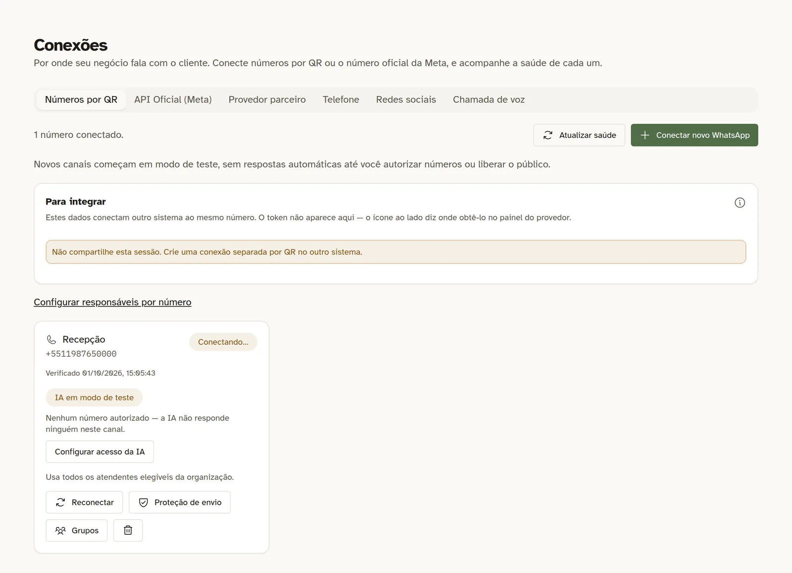
Conexões: o cartão do número mostra o status e o aviso "IA em modo de teste".
Atenção
Todo número novo começa em modo de teste: a IA não responde ninguém até você autorizar números de teste ou liberar o público. É a causa mais comum de "publiquei e não responde".
1. Conectar o WhatsApp
Admin
Onde: Canais › Conexões
Tela de Conexões, com as abas: Números por QR, API Oficial (Meta), Provedor parceiro, Telefone, Redes sociais e Chamada de voz.
Deixe o celular à mão, com o WhatsApp aberto em Aparelhos conectados. O QR vale poucos minutos.
Clique em Conectar novo WhatsApp e leia o QR com o celular.
Espere o cartão do número aparecer como conectado.
Abra Configurar acesso da IA e autorize os números de teste (o seu, por exemplo). Só depois libere o público.
No cartão do número também estão: Reconectar, Proteção de envio (janela de horário, ritmo e teto diário) e Grupos (quais grupos do WhatsApp entram no Inbox).
Se aparecer isto
"Não consegui falar com o WhatsApp — O serviço de WhatsApp desta instalação não respondeu."
Por que acontece: O serviço de WhatsApp não respondeu naquele momento.
O que fazer: Clique em "Tentar de novo". Se persistir, avise o suporte do THOTH. Você pode usar "Pular por enquanto" e conectar depois.
A mensagem de erro como aparece no passo 2 do primeiro acesso.
Se aparecer isto
O QR fica em "Preparando o código…" e não aparece.
Por que acontece: O sistema não conseguiu falar com o WhatsApp naquele momento.
O que fazer: Espere um minuto e use "Tentar de novo". Se continuar, o problema é de conexão do sistema com o WhatsApp: fale com o suporte do THOTH.
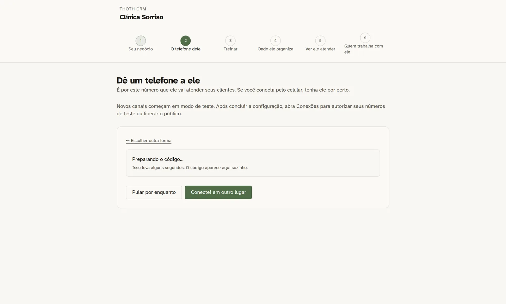
O QR ainda sendo preparado.
2. A chave da inteligência artificial
Gerente+
Onde: Agente de IA › Credenciais
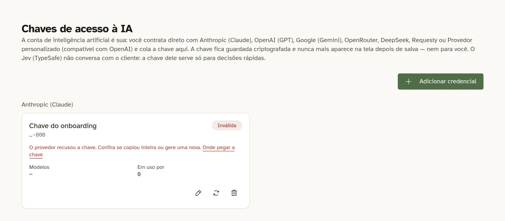
Chaves de acesso à IA. O cartão vermelho "Inválida" mostra o que fazer.
Em Agente de IA › Credenciais, clique em Adicionar credencial.
Escolha a empresa (Anthropic, OpenAI, Google, OpenRouter e outras), dê um nome e cole a chave.
Espere a validação. Sem chave validada, nenhum agente publica.
Em Agente de IA › Provedores, escolha qual inteligência cuida de cada parte (atendimento, roteador, follow-up, áudio).
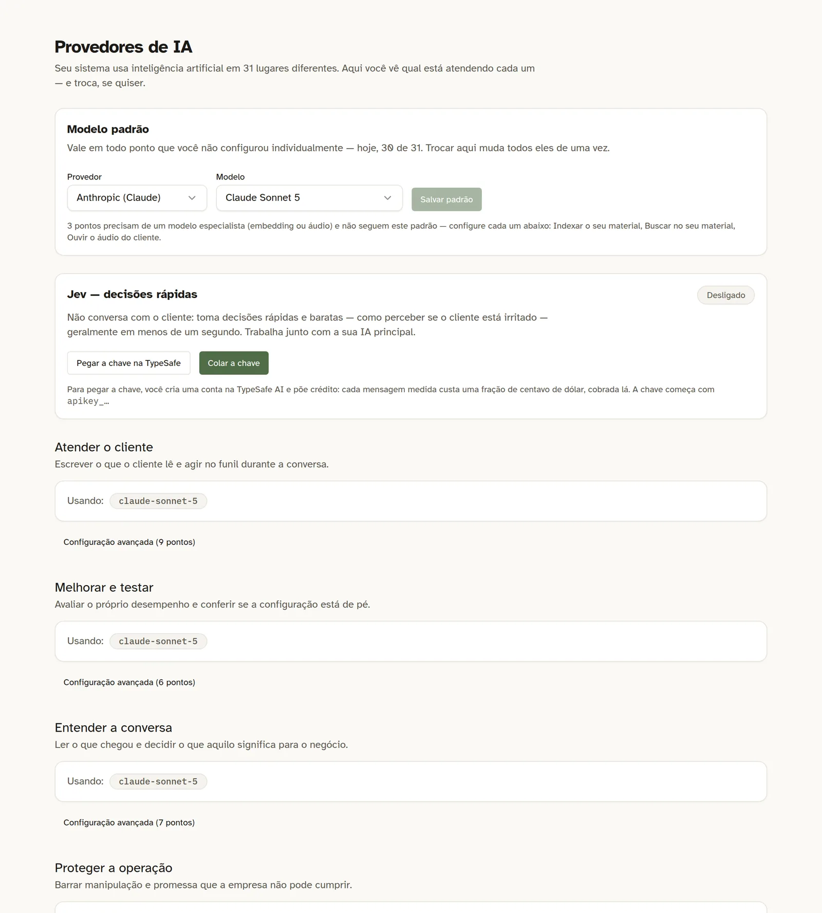
Provedores: o "Modelo padrão" vale para tudo que você não ajustou.
Se aparecer isto
Cartão da chave com selo "Inválida": "O provedor recusou a chave. Confira se copiou inteira ou gere uma nova."
Por que acontece: A chave foi copiada incompleta, com espaço, ou já foi revogada.
O que fazer: Copie de novo direto do site da empresa de IA e cole. Use o ícone de lápis para editar e o de setas para validar de novo.
Se aparecer isto
No primeiro acesso: "Não consegui testar o crédito agora. Dá para seguir — mas confira o saldo na conta da empresa de IA antes de confiar nele."
Por que acontece: O sistema não conseguiu confirmar a chave naquele momento.
O que fazer: Você pode seguir. O agente nasce como rascunho e, quando a chave for confirmada, basta publicar de novo, sem colar outra.
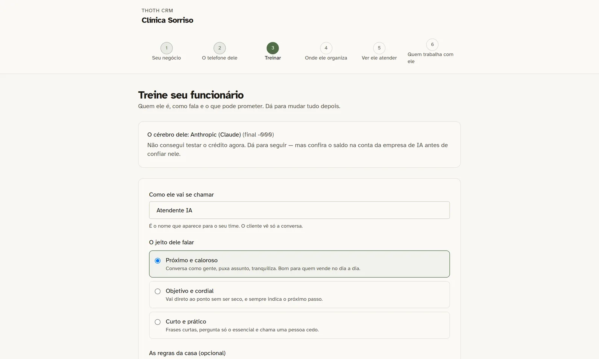
O aviso no passo 3 do primeiro acesso.
Dica. Uma chave da OpenAI ajuda mesmo que você use outra empresa: ela serve para entender áudios e preparar a base de conhecimento.
3. Montar o funil
Gerente+
Onde: CRM › Etapas do funil
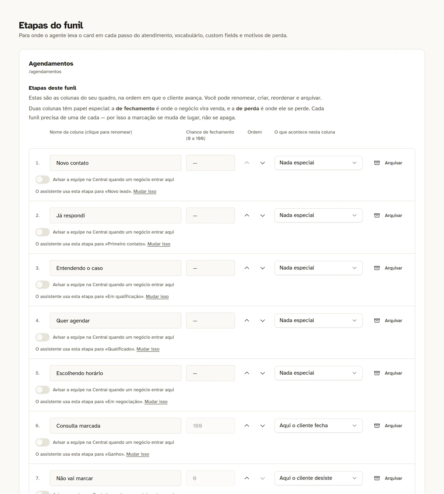
Etapas do funil: nome, chance de fechamento, ordem e o que a IA faz em cada coluna.
Em CRM › Etapas do funil, crie ou ajuste as colunas na ordem em que o cliente avança.
Marque uma etapa de fechamento (venda ganha) e uma de perda. Cada funil precisa das duas.
Em cada etapa, escolha o que "acontece nesta coluna" para a IA (novo contato, qualificando, negociando…). Coluna sem essa marca, a IA não usa.
Se quiser, ligue "Avisar a equipe na Central quando um negócio entrar aqui".
No primeiro acesso o sistema já propõe um quadro pronto para o seu tipo de negócio. Você ajusta depois.
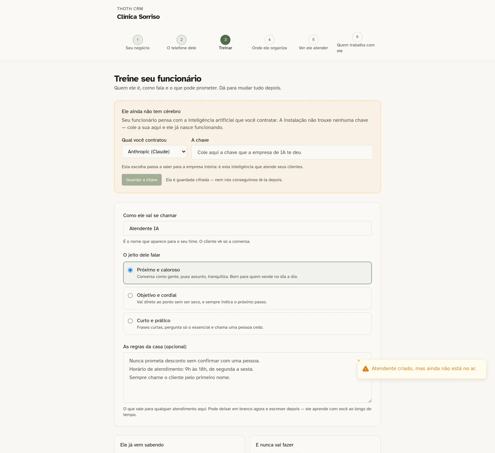
No primeiro acesso: o quadro proposto para clínica, com as colunas editáveis.
Se aparecer isto
"Não consegui pedir uma sugestão para o seu funcionário agora — seu funcionário ainda não está no ar."
Por que acontece: A sugestão de funil vem da IA, e ela ainda não estava publicada.
O que fazer: Não trava nada: o sistema já montou um quadro pronto. Ajuste as colunas na mão ou escolha "Prefiro começar de um modelo pronto".
4. Ensinar o negócio para a IA
Gerente+
Onde: Agente de IA › Conhecimento e Agente de IA › Memória
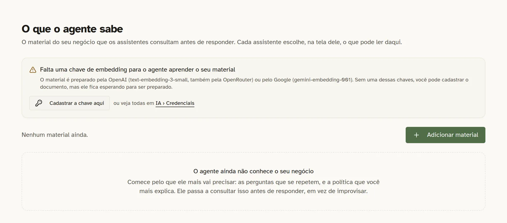
"O que o agente sabe": os materiais que a IA consulta antes de responder.
Clique em Adicionar material.
Escolha o tipo: Perguntas e respostas (FAQ), Documento (PDF, texto ou planilha) ou catálogo de produtos.
Dê um nome ao material e escreva ou cole o conteúdo.
Clique em Adicionar ao acervo e espere o material ficar "pronto".
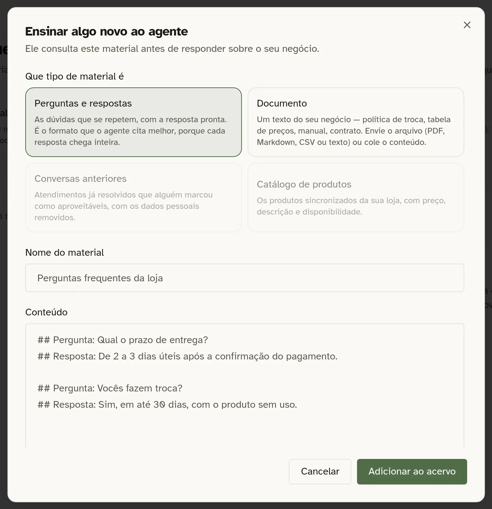
Adicionando um material de perguntas e respostas.
Formato de FAQ## Pergunta: Vocês fazem avaliação gratuita?
## Resposta: Sim. A primeira avaliação é gratuita e dura cerca de 30 minutos.
Se aparecer isto
Faixa laranja: "Falta uma chave de embedding para o agente aprender o seu material."
Por que acontece: Para "ler" o material a IA precisa de uma chave da OpenAI, da OpenRouter ou do Google. Sem ela o documento é cadastrado, mas fica esperando.
O que fazer: Clique em "Cadastrar a chave aqui" ou vá em Agente de IA › Credenciais.
Memória: as regras da casa
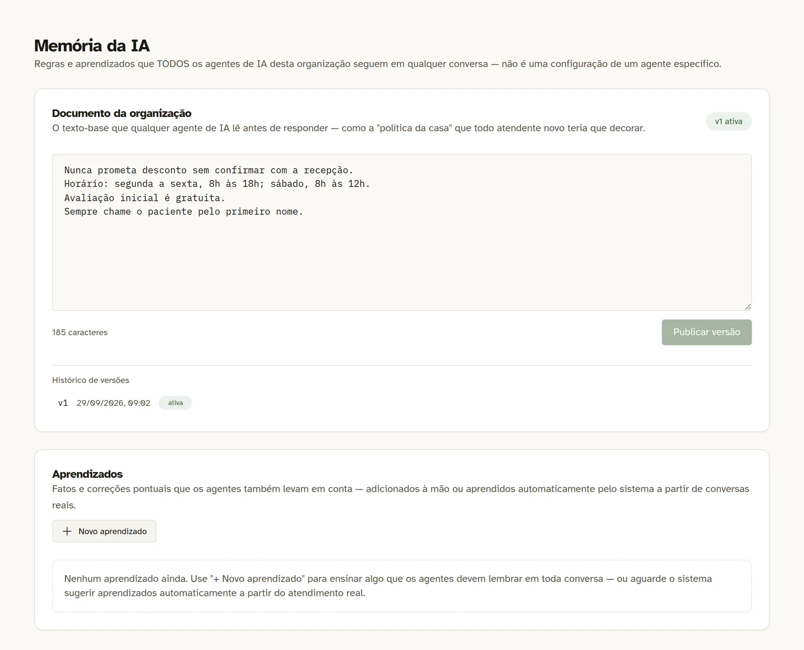
Memória da IA: o texto vale para todos os agentes, e cada versão publicada fica no histórico.
Escreva regras curtas ("Nunca prometa desconto sem confirmar", horários, avaliação gratuita) e clique em Publicar versão. Vale já no próximo atendimento. A diferença: Conhecimento é o que a IA consulta (preços, serviços); Memória é o jeito da casa.
5. Criar, testar e publicar o agente
Gerente+
Onde: Agente de IA › Agentes
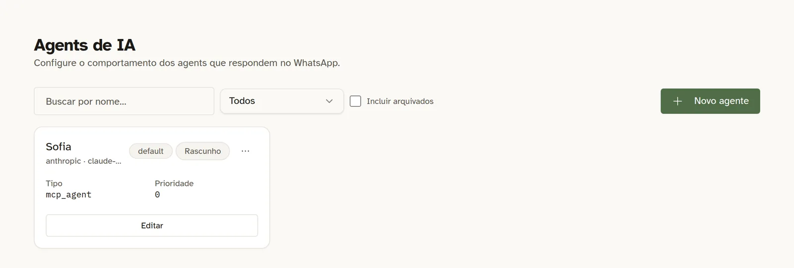
Agentes de IA: o cartão mostra o selo "default" e "Rascunho".
Abra o agente com Editar. As abas do alto são: Configuração, Teste, Capacidades (mostra o uso dos últimos 30 dias), Execuções, Histórico e Propostas.
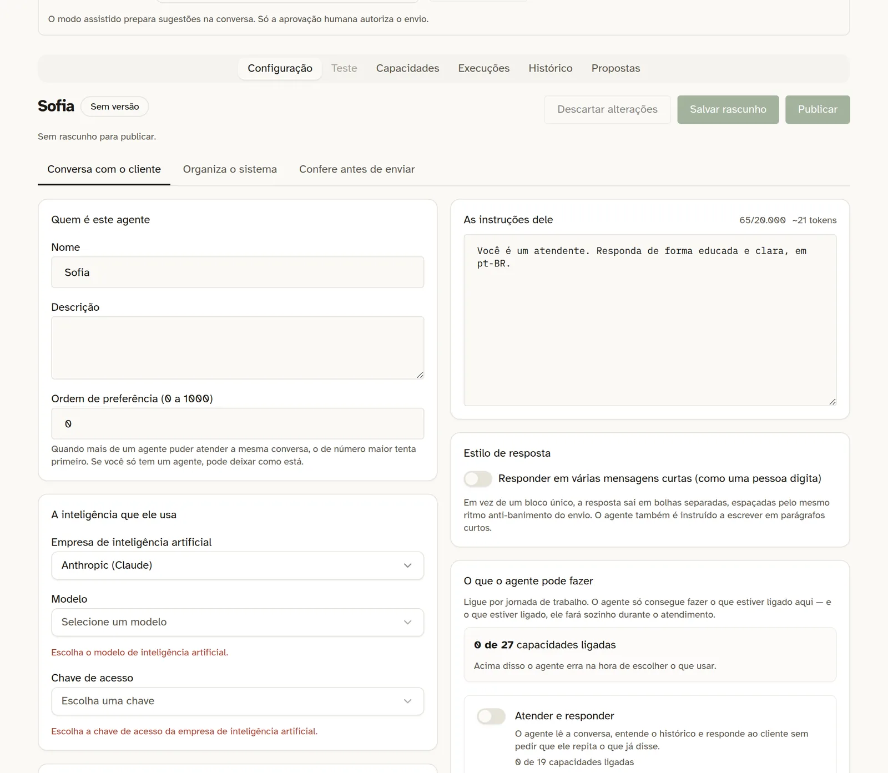
Configuração: nome, as instruções dele, a inteligência que usa e o número que atende.
Quem é este agente: nome e ordem de preferência (se dois agentes podem atender a mesma conversa, vale o maior número).
As instruções dele: escreva quem ele é, para quem fala, o que oferece e o que nunca faz (veja o exemplo abaixo).
A inteligência que ele usa: escolha a empresa, o modelo e a chave de acesso.
Por qual número ele atende: escolha o número conectado.
Clique em Salvar rascunho. Só então a aba Teste fica disponível.
Na aba Teste, escreva como se fosse o cliente e veja a resposta. Isso consome crédito da IA.
Gostou? Clique em Publicar. Vale no próximo atendimento.
Se aparecer isto
O botão "Publicar" fica apagado, e aparecem em vermelho: "Escolha o modelo…", "Escolha a chave de acesso…" e "Escolha o número…".
Por que acontece: Faltam os três itens obrigatórios. Sem eles o rascunho salva, mas não publica.
O que fazer: Preencha os três campos em vermelho e salve o rascunho de novo.
Exemplo de instruçõesVocê é a Sofia, assistente virtual da Clínica Sorriso. Converse em português, com mensagens curtas e uma pergunta por vez. Primeiro entenda o que o paciente precisa (limpeza, clareamento, implante, aparelho) e só depois ofereça a avaliação gratuita. Quando o paciente pedir uma pessoa, relatar dor forte ou inchaço, passe para a equipe.
O que o agente pode fazer
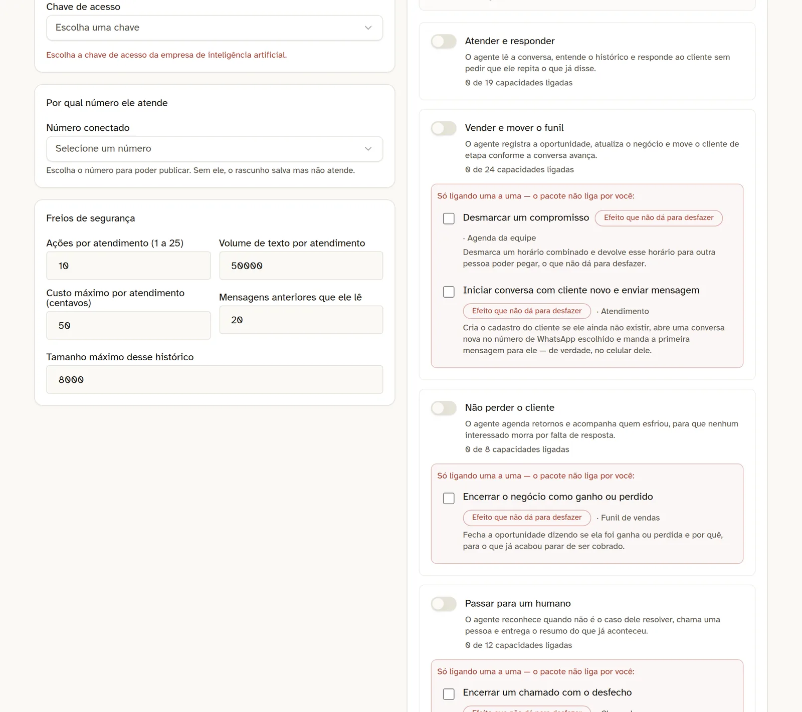
As capacidades vêm em pacotes: Atender e responder, Vender e mover o funil, Não perder o cliente, Passar para um humano, Organizar a operação, Aprender e evoluir.
Ligue só o que o agente precisa. Dentro de cada pacote, as ações mais delicadas (as caixas com aviso vermelho, como "Desmarcar um compromisso" ou "Encerrar o negócio como ganho ou perdido") não vêm ligadas: você liga uma a uma. Aplicar tags fica nos pacotes "Atender e responder" e "Organizar a operação".
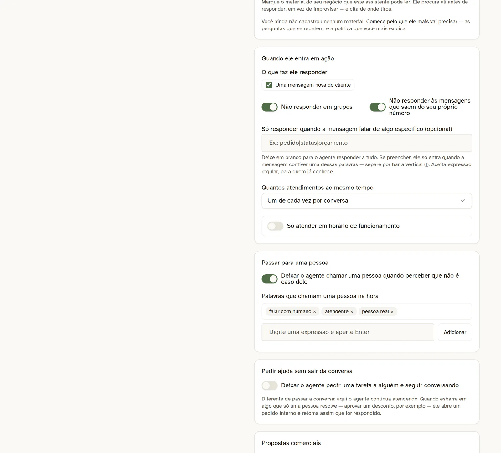
Mais abaixo: quando ele entra em ação, quando chama uma pessoa (palavras como "falar com humano", "atendente", "pessoa real") e os comandos pelo celular.
Dica. Toda alteração cria uma versão nova. A versão publicada nunca muda, e o botão de reverter volta para a anterior em segundos.
6. Follow-ups: retomar quem sumiu
Gerente+
Onde: Agente de IA › Follow-ups
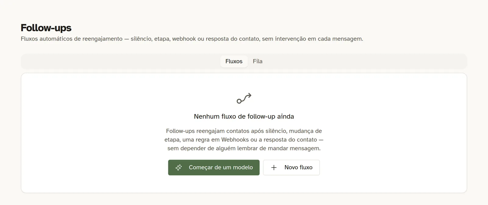
Follow-ups: abas "Fluxos" e "Fila". Vazio no começo.
Clique em Começar de um modelo (caminho mais curto).
Escolha um modelo pronto e clique em Instalar. Instalar não manda mensagem: o fluxo nasce como rascunho.
Leia os textos e ajuste para a voz da sua clínica.
Clique em Publicar.
Por último, ligue o fluxo no agente, no campo de follow-ups que ele arma.
Os modelos prontos: consulta, exame, cirurgia e falta.
Atenção
São dois passos, publicar o fluxo e ligá-lo no agente. Só o primeiro deixa o fluxo vivo na lista e morto no motor. Se esquecer, o sistema abre um aviso em Alertas dentro de cerca de uma hora (comportamento descrito na documentação do produto, não reproduzido aqui).
7. Roteador: vários agentes no mesmo número
Gerente+
Onde: Agente de IA › Roteadores
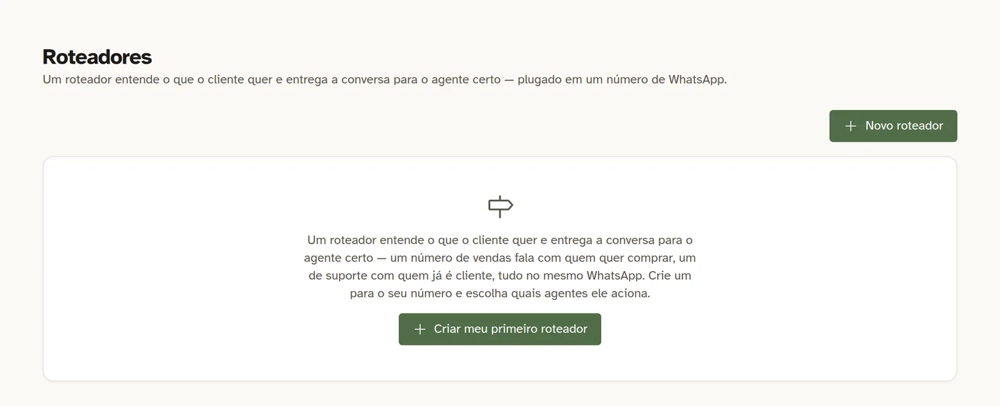
Roteadores: só é preciso quando há dois ou mais agentes no mesmo número.
Clique em Novo roteador, dê um nome e escolha o número de WhatsApp.
Crie as intenções. Exemplo: "quer agendar" vai para o agente de agenda.
Descreva cada intenção do jeito que o cliente fala e dê frases de exemplo.
Escolha o agente de fallback, que atende quando nenhuma intenção serve.
Ative o roteador.
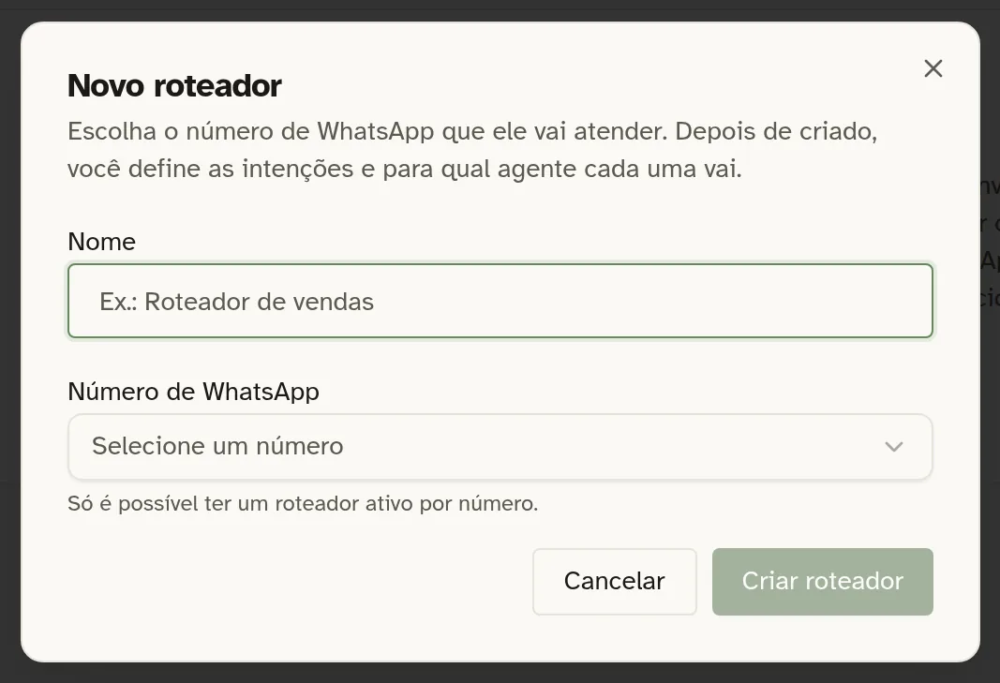
Novo roteador: só um roteador pode ficar ativo por número.
Horários de atendimento (para a Agenda funcionar)
Gerente+
Onde: Configurações › Equipe › Atendimento
Sem horários publicados, ninguém consegue marcar nada na Agenda, nem a IA. Cada pessoa da equipe que atende precisa ter os seus.
Equipe › Atendimento: cada linha mostra o horário da pessoa. "Não publicado" é o problema.
Vá em Configurações › Equipe › Atendimento.
Na linha da pessoa, clique no ícone de relógio.
Confira o fuso horário (por exemplo, São Paulo).
Clique em Adicionar janela uma vez para cada dia: escolha o dia da semana e o início e o fim (exemplo: Seg 08:00 às 18:00).
Clique em Salvar.
Uma janela por dia, de segunda a sexta.Depois de salvar aparece "Atendente atualizado" e o horário na linha da pessoa.
Dica. Quer pausar a agenda de alguém? Tire as janelas ou use o botão "Disponível" da linha.
Equipe e distribuição dos clientes
Gerente+
Onde: Configurações › Equipe e Configurações › Distribuição de atendimento
Equipe: membros e o convite de novas pessoas.
Clique em Convidar membros.
Digite até 20 e-mails, um por linha, e escolha o papel (leitura, atendente, gerente ou administrador).
O "Perfil de interface" decide quais áreas aparecem no menu. As permissões continuam sendo as do papel.
Clique em Enviar convites.
Convidar membros.
Se aparecer isto
"Esta instalação ainda não envia e-mail. Você recebe um link para cada pessoa e manda por onde quiser."
Por que acontece: O envio de e-mail ainda não foi configurado no sistema.
O que fazer: Copie o link de cada convite (botão "Copiar link") e mande pelo WhatsApp. Quem abrir o link entra na empresa.
O link de convite aparece na própria tela.
Quem recebe cada cliente novo
Distribuição: escolha entre "Cada um pega o que quiser" e "Rodízio automático", e o que cada atendente enxerga.
Opção
Como funciona
Cada um pega o que quiser
Todo cliente novo cai na fila aberta; quem clicar em Assumir primeiro fica com ele.
Rodízio automático
O sistema distribui em sequência entre os atendentes disponíveis.
Todos veem tudo / Os seus, mais os sem dono / Só os seus
O que cada atendente enxerga. Gerente e administrador sempre veem tudo.
Ali também fica a opção "Devolver ao agente sozinho depois de um tempo sem resposta da equipe": se a pessoa some depois de assumir, a IA volta a atender.
Campanhas: falar com uma lista que você já tem
Gerente+
Onde: CRM › Campanhas
Campanhas: vazio no começo.
Clique em Nova campanha (é um rascunho, nada é enviado).
Dê um nome e escolha por qual número enviar.
Escolha a base legal: Consentimento (as pessoas pediram para receber) ou Interesse legítimo (com a avaliação de legítimo interesse registrada).
Em Público, escolha pelo menos um critério: etiquetas, tempo sem falar, funil e etapa. Use "Ver quantas pessoas" para conferir.
Escreva a mensagem, mande um teste para você e agende.
O formulário de nova campanha.
Atenção
O envio é devagar de propósito, no ritmo e na janela de horário do número (em Conexões › Proteção de envio). Isso protege o número de ser bloqueado pelo WhatsApp. Número recém-conectado precisa de dias de uso leve antes de campanhas grandes.
Prospecção: achar clientes novos
Admin
Onde: CRM › Prospecção
A prospecção busca empresas na internet (por segmento e cidade) e a IA faz a primeira abordagem, aos poucos. Difere da campanha: aqui as pessoas não estão no seu CRM antes.
Prospecção: primeiro a chave da Apify (serviço de busca), depois a busca.
Cole a chave da Apify e clique em Salvar chave. Sem ela o botão "Buscar empresas" não funciona.
Em 1. Encontrar empresas, preencha segmento (exemplo: "clínicas de estética"), cidade (exemplo: "Sorocaba, SP"), quantas empresas e o teto de gasto da busca, em dólar.
Clique em Buscar empresas e acompanhe em "3. Acompanhar resultados".
Em Configurar busca, escolha o agente publicado, a conexão de saída, o funil, a etapa inicial e a etapa de qualificados.
Escreva a oferta e quando considerar o cliente qualificado.
Defina o ritmo: Máximo em 24 horas (de 1 a 50) e Intervalo mínimo em minutos (de 5 a 1440).
Informe a referência da avaliação de legítimo interesse e clique em Iniciar abordagens com IA.
Configurar a busca e a abordagem.
Escolha a etapa certa
A etapa de qualificados deve ser uma etapa de interesse confirmado (por exemplo "Qualificado"), não "Respondeu". Quem só respondeu "não tenho interesse" não é qualificado.
Ritmo
Depois de iniciar, a oferta e o ritmo ficam travados naquela busca. Para mudar, pause e crie outra busca. Pelo código, o rascunho do ritmo fica só na tela: se recarregar a página antes de iniciar, os campos voltam para 10 por dia e 15 minutos. Preencha o ritmo por último e confira a linha "Ritmo:" no cartão depois de iniciar.
Toda primeira mensagem termina com o aviso de que a pessoa pode responder PARAR. Ele é obrigatório e não pode ser retirado. Quem pede para parar é bloqueado nas campanhas e na prospecção.
Dica. Ritmos baixos parecem uso normal e protegem o número. Uma boa partida é 20 abordagens por dia com 20 minutos entre elas. Número novo é segurado pelo sistema, com tetos menores nos primeiros dias.
Acompanhar a IA depois de ligada
Gerente+
Onde: Agente de IA › Uso e orçamento
Tela
Para que serve
Agente de IA › Casos
Atendimentos que a IA conduziu ou passou para a equipe.
Agente de IA › Alertas
O que a IA encontrou e precisa de uma decisão sua ("Central de avisos").
Agente de IA › Execuções
O que a IA fez e, se falhou, por quê.
Agente de IA › Uso e orçamento
Quanto a IA gastou e o teto do mês.
Análise › Desempenho
Funil e desempenho por atendente nos últimos 30 dias.
Análise › Atividades
O que a equipe e os agentes fizeram no período.
Análise › Evolução da IA
Se o agente está melhorando e onde ainda erra.
Uso de IA: custo, atendimentos com IA, quantos passaram para uma pessoa e tempo de resposta.Desempenho: conversão, automação e o que cada resultado custou.Execuções: vazio até o agente atender alguém.
Atenção
Em Uso e orçamento aparece "Sem limite definido — a IA não vai parar sozinha por gasto". Defina um teto mensal no primeiro dia, em Editar limite.
Recursos opcionais (exemplo: Propostas)
Admin
Onde: Configurações › Recursos opcionais
Alguns recursos vêm desligados e são liberados para a sua empresa pelo suporte do THOTH. Depois de liberado, o administrador da empresa liga em Configurações › Recursos opcionais.
Se aparecer isto
"404 — Página não encontrada" ao abrir Propostas.
Por que acontece: O recurso ainda não foi liberado para a sua empresa. Sem isso, a tela não existe nem no menu.
O que fazer: Peça ao suporte do THOTH para liberar. Depois, siga os passos abaixo.
Vá em Configurações › Propostas e ligue "Ligar propostas comerciais para esta organização".
Ajuste validade e condições padrão e clique em Salvar.
Pronto: a tela CRM › Propostas passa a abrir.
"Ligar propostas comerciais para esta organização" ainda desligado.Depois de ligado, a tela Propostas abre.Configurações › Recursos opcionais mostra o que está ligado e leva ao ajuste de cada um.
Outros recursos, quando liberados, aparecem assim:
Nova proposta: escolha o negócio, dê um título, validade e condições.Modelos de proposta prontos para personalizar.Empresas (venda para empresas): cadastro por CNPJ.Honorários (advocacia): contratos e calendário de parcelas.Faturamento: quanto entrou, por forma de pagamento.Dados externos: conecta um banco de outro sistema, somente leitura.Fluxos de atendimento: perguntas que a IA conduz e guarda na ficha do cliente.
Marca da sua empresa
Admin
Em Configurações › Marca você troca o nome, a cor e o logo que a sua equipe vê no menu lateral. Há um logo para o tema claro e outro, opcional, para o tema escuro.
Deixe o nome em branco para usar o nome padrão do sistema.
Documentos da LGPD nunca levam a marca: eles nomeiam a sua empresa, que é a responsável legal pelos dados.
A tela de marca: nome, cor, logo claro e escuro, e a prévia nos dois temas.
Configurações que vale conhecer
Gerente+
Onde: Configurações
O painel de Configurações: Sua empresa, Sua conta, Dados e acesso.
Tela
Para que serve
Tipos de agendamento
O que se pode marcar, quanto dura, quem atende e a confirmação de presença.
Tags
As etiquetas da empresa: renomear, juntar ou excluir. Mostra quantos contatos usam cada uma.
Notificações
Por onde e sobre o quê você é avisado.
Marca
Nome, cor e logo que a empresa mostra dentro do sistema.
Segurança
Verificação em duas etapas (opcional) e códigos de recuperação.
Recursos opcionais
Tudo que se liga e desliga, com o atalho para ajustar. Comece por aqui quando não achar algo.
LGPD
Pedidos de clientes para exportar ou apagar os dados.
API Tokens, Webhooks
Ligar o CRM a outros sistemas. Só com ajuda técnica.
Tags.Notificações.Marca.Segurança.Tipos de agendamento.
Se aparecer isto
Notificações: "Nesta instalação, os avisos só aparecem com o site aberto."
Por que acontece: As chaves de aviso com o site fechado ainda não foram ativadas.
O que fazer: Peça ao suporte do THOTH para ativar os avisos com o site fechado. Enquanto isso, mantenha o site aberto para receber os avisos.
Erros e avisos: o que cada um quer dizer
Todas as mensagens abaixo apareceram na tela durante os testes deste manual. Cada uma diz por que acontece e o que fazer.
Email ou senha incorretos.
Login
Por que acontece: Senha ou e-mail errado.
O que fazer: Confira; use "Esqueci minha senha".
Email ou senha incorretos.
Não consegui falar com o WhatsApp
Conexão do número
Por que acontece: O serviço de WhatsApp não respondeu.
O que fazer: "Tentar de novo"; avisar o suporte do THOTH; pode pular e conectar depois.
Não consegui falar com o WhatsApp
Preparando o código… (QR não aparece)
Conexão do número
Por que acontece: O sistema não alcançou o WhatsApp.
O que fazer: Esperar, tentar de novo; se continuar, falar com o suporte do THOTH.
Preparando o código… (QR não aparece)
Inválida: O provedor recusou a chave
Credenciais de IA
Por que acontece: Chave incompleta, errada ou revogada.
O que fazer: Copiar de novo da empresa de IA; editar e validar.
Inválida: O provedor recusou a chave
Não consegui testar o crédito agora
Primeiro acesso
Por que acontece: Não deu para confirmar a chave.
O que fazer: Pode seguir; publique depois que a chave for confirmada.
Não consegui testar o crédito agora
Seu atendente foi criado, mas ficou como rascunho
Primeiro acesso
Por que acontece: A chave ainda não foi confirmada, então o agente não pode ser publicado.
O que fazer: Publique de novo depois de confirmar a chave. Não precisa colar outra.
Seu atendente foi criado, mas ficou como rascunho
Falta uma chave de embedding
Conhecimento
Por que acontece: Sem chave da OpenAI/OpenRouter/Google o material não é preparado.
O que fazer: Cadastrar a chave em Credenciais.
Falta uma chave de embedding
Escolha o modelo / a chave / o número (em vermelho, Publicar apagado)
Agente
Por que acontece: Faltam itens obrigatórios para publicar.
O que fazer: Preencher os três e salvar o rascunho.
Escolha o modelo / a chave / o número (em vermelho, Publicar apagado)
IA em modo de teste: nenhum número autorizado
Conexões
Por que acontece: Todo número novo começa em teste.
O que fazer: Configurar acesso da IA e autorizar números.
IA em modo de teste: nenhum número autorizado
Você ainda não publicou seus horários de atendimento
Agenda
Por que acontece: Ninguém publicou jornada.
O que fazer: Equipe › Atendimento › relógio › janelas › Salvar.
Você ainda não publicou seus horários de atendimento
Sincronizar com o Google ainda não está disponível
Agenda
Por que acontece: O aplicativo do Google não foi cadastrado.
O que fazer: Falar com o suporte do THOTH.
Sincronizar com o Google ainda não está disponível
Escreva um título para a tarefa.
Tarefas
Por que acontece: Campo obrigatório vazio.
O que fazer: Preencher e salvar.
Escreva um título para a tarefa.
Não foi possível excluir: o contato ainda tem registros vinculados
Contatos
Por que acontece: O contato tem compromisso na Agenda.
O que fazer: Cancelar/apagar o compromisso e excluir de novo.
Não foi possível excluir: o contato ainda tem registros vinculados
Contato "Sem nome" criado sem querer
Contatos
Por que acontece: O formulário aceita tudo em branco.
O que fazer: Preencher telefone ou e-mail; excluir o vazio.
Contato "Sem nome" criado sem querer
Esta instalação ainda não envia e-mail
Convite de equipe
Por que acontece: O envio de e-mail ainda não foi configurado no sistema.
O que fazer: Copiar o link do convite e mandar por WhatsApp.
Esta instalação ainda não envia e-mail
404 — Página não encontrada (Propostas)
Módulos
Por que acontece: Recurso ainda não liberado para a sua empresa.
O que fazer: Pedir ao suporte do THOTH; depois ligar em Configurações › Propostas.
404 — Página não encontrada (Propostas)
Nesta instalação, os avisos só aparecem com o site aberto
Notificações
Por que acontece: Chaves de aviso não geradas.
O que fazer: Pedir ao suporte do THOTH para ativar.
Nesta instalação, os avisos só aparecem com o site aberto
Mensagem "na fila" que não sai
Inbox
Por que acontece: O WhatsApp não está realmente conectado.
O que fazer: Conexões › Reconectar.
Mensagem "na fila" que não sai
Sem limite definido: a IA não vai parar sozinha por gasto
Uso de IA
Por que acontece: Nenhum teto foi definido.
O que fazer: Editar limite.
Sem limite definido: a IA não vai parar sozinha por gasto
Não consegui pedir uma sugestão para o seu funcionário
Primeiro acesso (funil)
Por que acontece: O agente ainda não está no ar.
O que fazer: Nada trava: use o quadro pronto.
Não consegui pedir uma sugestão para o seu funcionário
Glossário
As palavras que aparecem nas telas, traduzidas.
Palavras do sistema
Todos
Lead / negócio
Um cliente em potencial, ou uma venda em andamento, dentro do funil.
Funil
O caminho da venda, dividido em etapas (colunas).
Etapa
Uma coluna do funil, como "Consulta marcada".
Inbox
A caixa de conversas do WhatsApp.
Automático
A IA respondendo sozinha.
Assumir
Tirar a conversa da IA e responder você.
Agente
Um atendente de IA, com instruções e um número de WhatsApp.
Prompt / instruções
O texto que diz ao agente como se comportar.
Rascunho / Publicado
Rascunho é a versão em teste. Publicado é a que atende de verdade.
Roteador
Quem decide qual agente responde, quando há mais de um no mesmo número.
Follow-up
A mensagem de retomada para quem parou de responder.
Conhecimento
Os materiais que a IA consulta: preços, serviços, perguntas frequentes.
Memória
As regras da casa que valem para todos os agentes.
Credencial
A chave de acesso à empresa de IA.
Caso / demanda
Um pedido do cliente que precisa de solução, aberto pela IA ou pela equipe.
Alertas / Central de avisos
A lista de avisos que pedem uma decisão de alguém.
Handoff
A passagem da conversa da IA para uma pessoa.
Modo de teste
Fase em que um número novo só conversa com números autorizados.
Tag
Uma etiqueta para agrupar clientes ou conversas.
Campanha
Uma mensagem enviada a uma lista de contatos, aos poucos.
Prospecção
Buscar empresas novas e abordá-las com a IA.
Legítimo interesse
Base da LGPD que permite contatar empresas sem pedido prévio, com uma avaliação escrita.
QR
O quadrado que o celular lê para ligar o WhatsApp ao CRM.
Webhook
Um aviso automático que o CRM manda para outro sistema.
LGPD
A lei que protege os dados pessoais dos seus clientes.
Nada encontrado. Tente outra palavra, como "assumir", "agenda" ou "backup".
Clique para fechar · clique na imagem para alternar entre ajustar à tela e tamanho real